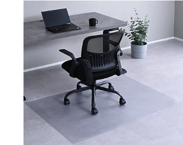
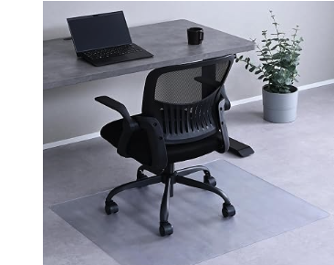
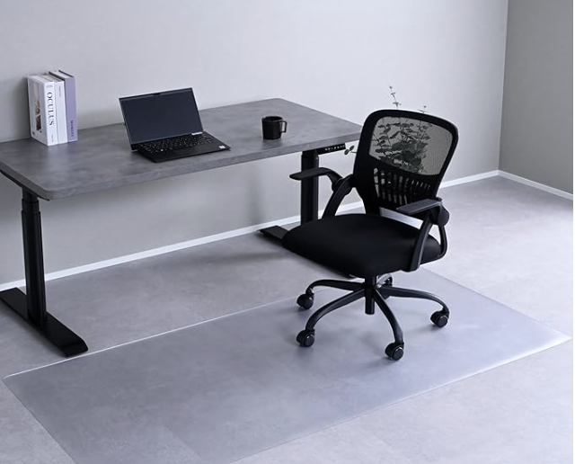

チェアマット、クリア1.5mm厚
——サイズはどれを選ぶか

フローリングの上に椅子を置いていると、キャスターの跡やへこみが少しずつ気になってきます。対策はチェアマットの一択なのですが、いざ探すとサイズがいくつもあって迷います。今回は購入前の下調べとして、同じ山善のクリア1.5mm厚シリーズの中で、サイズ違いを比べてみました。まだ手元にはなく、購入前に商品ページとレビューを調べた内容です。
選び方の整理
見るところは2つあります。
- サイズ — デスクの奥行きと、椅子を引いたときの可動域がマットの中に収まるか
- 価格 — サイズが大きくなるほど、当然ながら価格も上がる
※本文中の商品リンクはアフィリエイトリンクです（PR）。まだ購入前で、実際に使った感想はありません。商品ページとレビューを調べた内容としてまとめています。
一覧
- 山善 CFM-1080(P)（100×80cm）¥2,170★3.9（1,690件）
- 山善 CFM-120（120×90cm）¥2,636★4.1（1,671件）
- 山善 CFM-180（180×90cm）¥3,200★4.1（221件）
※価格・レビュー件数は2026年8月時点のAmazon.co.jpの情報です。いずれも山善のクリアタイプ・厚み1.5mm・塩化ビニル樹脂製で、ハサミでカットして微調整もできます。
3サイズの違い
3つとも素材と厚みは同じで、違うのは面積だけです。小さい順に並べると、100×80cm・120×90cm・180×90cmで、価格もほぼその順番どおりに上がっていきます。
山善 CFM-1080(P) 100×80cm・¥2,170

3サイズの中でいちばんコンパクトで、価格も最安です。レビュー件数は1,690件と多く、定番として選ばれています。評価は★3.9とほかの2サイズよりやや低く、レビューを見る限りでは「デスクの奥行きに対してマットが少し足りない」という声が、サイズ選びの失敗として目立ちます。省スペースのデスクで、椅子をあまり大きく引かない使い方向けのサイズだと思います。
山善 CFM-120 120×90cm・¥2,636
3つの中でいちばんレビュー件数が多く（1,671件）、評価も★4.1と安定しています。一般的なオフィスチェアの可動域をひとまずカバーできる目安のサイズで、「まず失敗しにくい」という意味では、最初の1枚として選ばれやすいサイズだと思います。100×80cmより一回り大きい分、価格も少し上がります。
山善 CFM-180 180×90cm・¥3,200

横幅180cmと、3サイズの中では明らかに大きめです。ワイドデスクやL字デスクなど、椅子の可動範囲が横方向に広い環境向けです。評価は★4.1と高いのですが、レビュー件数は221件とほかの2サイズよりだいぶ少なく、まだ実績の厚みという点では途上に見えます。価格も3つの中でいちばん高くなります。
選ぶなら
- 省スペースのデスクで、椅子をあまり引かないなら、CFM-1080(P)（100×80cm）。ただしレビューでは奥行き不足の指摘もあるため、実際のデスク奥行き＋椅子を引いた分の余裕は事前に測っておきたい
- 一般的なデスク・チェアの組み合わせで、まず失敗しにくいものを選びたいなら、CFM-120（120×90cm）。レビュー件数・評価のバランスがいちばん良く、標準的な選択肢だと思います
- ワイドデスクやL字デスクなど、横方向の可動域が広いなら、CFM-180（180×90cm）。ただしレビュー件数はまだ少なめ
結局のところ、デスクの奥行きと、椅子をいちばん引いたときにどこまで動くかを一度メジャーで測ってから選ぶのが、いちばん失敗が少なそうです。実際に届いて使ってみたら、この記事にも感想を追記するつもりです。